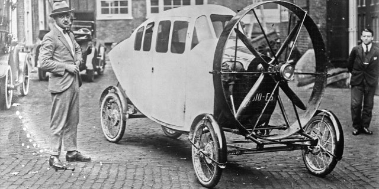

El reto de esta actividad será el de construir un vehículo que al mover sus ruedas, mediante engranajes, se mueva una hélice que tendrá en la parte superior.

Mediante engranajes, uniremos las ruedas con la hélice de una forma robusta, para que al empujar el coche, el movimiento de las ruedas se traslade a la hélice.
Un ejemplo de montaje lo mostramos a continuación.

En este caso no lleva programación, ya que no tenemos motores ni sensores.
¡¡Listo!! Ya podemos mover el vehículo y ver como se mueve la hélice al mismo tiempo.
Ahora podríamos tunearlo para que realmente pareciera un vehículo con hélice.